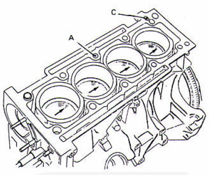
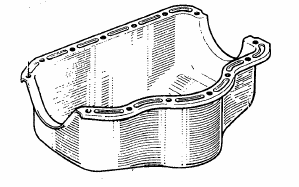

Motores
Partes pricipales de un motor

Block
En el block estan ubicados los cilindros con sus respectivas camisas,
que son cavidades practicadas en el mismo, por cuyo interior se
desplazan los pistones. El block del motor debe poseer rigidez, poco
peso y poca dimension, de acuerdo con la potencia que desarrolle. Puede
estar fabricado en fundicion de acero o de alumnio, presentando este
ultimo material la ventaja de poseer menor peso.

Tapa de cilindros
La tapa de cilindros constituye una pieza de hierro fundido (o de aluminio en algunos motores),
que va colocada encima del block del motor. Su función es sellar la parte superior de los
cilindros para evitar pérdidas de compresión y salida inapropiada de los gases de escape.
En la tapa de cilindros están las válvulas de admisión y de escape, así como las bujías.
Tiene además conductos maquinados los cuales están conectados a los múltiples de admisión y
de escape los que permiten el ingreso de la mezcla y el desagote de los gases combustionados.
La tapa de cilindros va abulonada al block y entre medio se coloca una junta para lograr un
sellado perfecto.

Carter
El cárter es el lugar donde se deposita el
aceite lubricante que permite lubricar el
cigüeñal, los pistones, el árbol de levas y otros
mecanismos móviles del motor.
Durante el tiempo de funcionamiento del
motor una bomba de aceite extrae el
lubricante del cárter y lo envía a los
mecanismos que requieren lubricación.
